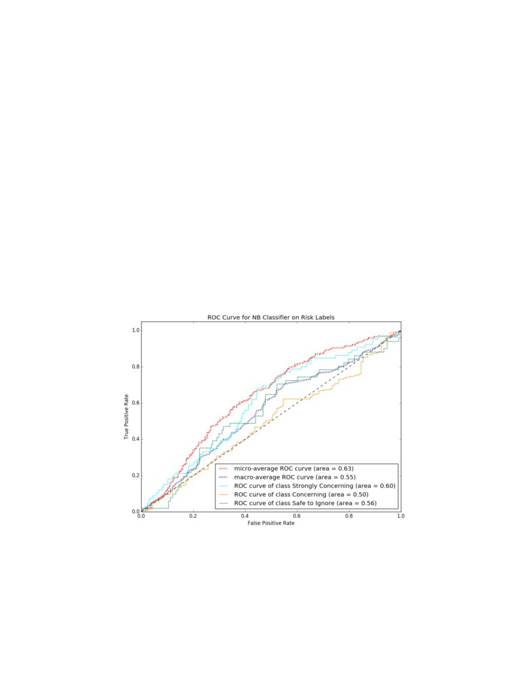

Risk Assessment of Suicide using Machine Learning
BiswajitDhar
Dolores Ke Ding
David Marks
Roya Pashmineh
Utsab Shrestha
Depaul University, CSC 672
1
Table of Contents
1. Abstract
2
3. Introduction
2
3. Related Work
4
3.1 Word2Vec Topic Modeling
4
3.2Human Annotation
4
3.3Social Media Data
5
4. Methodology
6
4.1. Data Gathering and Pre-processing
6
4.2 Data Sampling
7
4.3 Data Labeling
8
4.4 Data Classification
14
5. Results
16
5.1 Data Acquisition and Cleansing
16
5.2 Data Sampling
18
5.3 Data Labeling - Human annotation
20
5.4Effectiveness of Machine Classifiers
24
6. Discussion
29
7. Conclusion
31
8. Future Work
32
9. References
33
10. Appendix
35
2
1. Abstract
Suicide is a global public health problem that is responsible for alarming number of
deaths every year worldwide. Suicide risk is difficult to detect because of the heterogeneous
characteristics of the individuals. Researchers in multiple disciplines seek to find the reasons for
the increase in suicides. Some of the studies show that there is a direct link of increase in
suicides rates with the popularity of smartphones and social media. The purpose of this study is
to determine if machine learning techniques have the capacity to qualify the risk of suicide when
applied to informal online posts regarding suicide.
With the popularity of the world wide web and social media, people suffering from
suicide ideation have resorted to seeking help online rather than consulting professionals and
risking social stigmatization. This gives researchers an opportunity to analyze the vast amount of
social media data to see what drives and motivates people to suicidal thoughts. Therefore,
analyzing and assessing social media post to classify suicidal ideation and possibly predict
suicidal attempts is seen as a vital area of research that can help alleviate suicide epidemic. We
explored Reddit data to design, develop and evaluate machine learning algorithm can unlock
valuable information from Reddit posts to detect and predict suicidal thoughts and ideation.
Our informal topic discovery evaluation reveals that machine learning techniques can
detect the risk of suicide from informal online posts. This paper has demonstrated that at least
two models perform substantially better than random chance at identifying the posts that present
the most serious and immediate risk of suicide. Naive Bayes performed the best, but Decision
Tree performed better than random chance.
2. Introduction
Suicide, the act of intentionally taking one's own life, is among one the leading cause of
death worldwide. American Foundation for Suicide Prevention reports that there are 123 suicides
on average every day and that the suicide rate in USA has been increasing year over year and has
recently surged to a 30-year high [1][2]. It is the 10th leading cause of mortality in the United
States and cost an estimated 44.6 billion dollars per year [3]. According to a study by National
Center for Health Statistics, the age-adjusted suicide rate in the United States increased a
staggering 24 percent from 1999 to 2014. Increases were seen in every age group except for
those 75 and above and in every racial and gender category except for black men [4]. This
suicidal epidemic has a profound impact on individuals, families, and communities across the
United States and the world.
Suicide risk is difficult to detect because of the heterogeneous characteristics of
individuals at potential risk of harming themselves. Most individuals having these risk factors do
not attempt suicide, and others without these conditions sometimes do. Therefore, there is a
danger in considering only individuals with certain conditions or experiences as being at risk for
suicide. Researchers in multiple disciplines seek to find the reasons for the increase in suicides.
Many studies focused on various stages of suicide process, from suicidal thoughts and ideations
through planning to attempt. Other studies have focused on identifying the risk of suicide in
various stages of the suicide process and find underlying causes of suicide. While many of the
3
causes of suicide stem from loneliness or relationship issues, other reasons for suicidal thoughts
include lack of support from friends and family, financial issues or simply lack of self-esteem.
Not surprisingly, some of the studies show that suicide rates among teenagers have risen along
with their ownership of smartphones and use of social media, suggesting a disturbing link
between technology and suicide rate.
With wide acceptance and popularity of social media, it has been found that people
suffering from suicidal thoughts tend to share their feelings on social media, such as Facebook,
Reddit, Twitter etc. Beyond sharing these thoughts about suicide, a new phenomenon has begun
where people live stream their suicide on platforms like Facebook and YouTube. Studies have
shown that people are more likely to seek support from non-professional resources like through
anonymous social media post, rather than seek help from professional due to the fear of social
stigma. Studies have shown that there is a positive correlation between suicide rates and volume
of social media posts related to suicide ideation and intent. [bd6] This gives researchers an
opportunity to analyze the vast amount of social media data to see what drives and motivates
people to suicidal thoughts. Therefore, analyzing and assessing social media post to classify
suicidal ideation and possibly predict suicidal attempts is seen as a vital area of research that can
help alleviate this epidemic. The goal of this project is to assess suicidal risk based on Reddit
post using machine learning techniques.
With the combination of informal social media language and complexity of suicidal
language that includes emotive content and possible signs of depression or other mental illnesses,
understanding the suicide communication and building a classifier to assess suicide risk can be a
challenging task. Our study aims to contribute to understanding on the topic of suicide in suicide
media by i) creating a high quality human-annotated suicide related data set that will help in
suicide study and suicide prevention in social media ii) using the labeled data set build an
automated classification model that can assess the suicide risk of a given social media post and
categorize it into which stage of suicide process the post is at. Our second aim depends on the
quality of the data set we will be able to build. We are aiming for a data set that captures most of
the features and characteristics of suicide communication and most importantly accurately the
data need to be accurately labeled. To minimize the error in labeling, we came up with
definitions of the labels modified for online informal language that will be used as a guideline for
the human annotation task. Finally, we will be using Natural-Language processing algorithms to
learn the features of this data set and experiment with text categorization algorithms to build a
classifier that performs well with the data.
The data set for this project consists of 94,671 Reddit posts. The whole work for the
project is broken down into four major phases, data sampling, data labeling, data classification
and evaluation. Given the resources of the team, it was decided that a small representative subset
of this datashould be selected, and manually labeled. The team decided to cluster the posts into
50 clusters using k-means clustering and then take the 20 posts closest to the cluster centroid and
20 posts furthest from the cluster centroid in order to obtain data that are representative of all
posts. To label the posts, two of the team members labeled the same data set individually and
another team member did third judgment on the posts which were on disagreements. Features for
classification model were created based on the word cluster created in the previous study on the
same data [5]. The Project team chose Neural Network (NN), Naive Bayes and Support Vector
4
Machine (SVM) to develop a classification model for the data. So far, in our experimental result
all three classification models showed more than 50 percent accuracy for risk level.
In subsequent sections, this report is organized to explain and describe related works,
methodology, results, and discussion. We conclude the report summarizing our findings and
recommendations for future works.
3. Related Work
3.1 Word2Vec Topic Modeling
Word2Vec is one of the popular topic modeling algorithm used to produce word
embedding. There are previous attempts by researchers to automatically extract informal latent
recurring topics using Word2Vec language model from online social media. In a previous study
on the same Reddit data being used for this project, Grant et al. attempted to do it by evaluating
the latent topics and then extensively comparing them to twelve risk factors that are proposed by
domain experts [5]. They computationally generated Word2vec language model using word
embeddings. The skip-gram model was used in their research which learns vector representations
of words by predicting neighboring words in a text. After that, the k -means clustering technique
using Euclidean distance was leveraged to group the items. This produced clusters of topics. As
part of word representation, the results of the model were subjectively evaluated. The results
showed that the word embeddings were able to capture much semantic information from the
corpus relevant to the suicidal ideation topic.
In a different research study for PTSD, Grant et al. tried to extract informal topics using
Word2Vec language model to explore patterns and association between the topics [6]. That
study demonstrated that Word2Vec can be successfully employed to identify latent topics related
to mental health issues, specifically PTSD. They checked clusters which were most and less
frequently related to PTSD. Both clusters were semantically coherent which proved that the
clusters were grouping words correctly. From the DSM manual, eight criteria for diagnosing
PTSD were evaluated against relevant clusters. Common words from the cluster were compared
with the description of the criteria. The informal topics captured by the clusters related well with
the PTSD diagnosis criteria. In some cases, it was challenging to capture the criteria where
symptoms occurred over time or symptoms that are difficult to express explicitly. One of the
limitation of that study was, some criteria could not be defined with informal topics. It was found
that, the Word2Vec algorithm could not capture the semantics of use of time in a sentence which
is very important for this research.
3.2 Human Annotation
Human annotation of data can be key in categorizing online posts since humans are better
than computers in understanding the semantics, subject, underlying context or ambiguity.
Researchers in the past successfully used human annotation of twitter data to classify suicidal
ideation. ODea et al. did a study on twitter data to establish the feasibility of consistently
detecting the level of concern for individuals' Twitter posts [7]. It aimed to design and implement
an automated computer classifier that could replicate the accuracy of the human coders. This
5
study aimed to examine whether the level of concern for a suicide-related post on Twitter could
be determined based solely on the content of the post. They manually coded each twitter posts
with one the three level of severity, such as strongly concerning, possibly concerning, and safe to
ignore. Then they used various machine learning algorithm to develop a text classifier that could
automatically distinguish tweets into the three categories of concern. Result from this study was
promising with overall agreement rate 76 percent. Although the agreement rates among human
coders and machine-learned classifier were satisfactory, concordance was by no means perfect.
Besides, human coding was difficult and time-consuming.
In another study, Burnap, et al. also used human annotation to identify features of
suicidal ideation that is going to be useful for machine learning [8]. In this study, researchers first
created a set of benchmark experimental results for machine learning approaches to classify
suicide ideation. Then they compared the popular baseline and ensemble classifier for suicide
ideation to see which classifier performs well. And finally, this study tried to develop a multi-
classifier that can distinguish between suicide related topics such as suicide ideation, awareness,
campaign, report, or low risk reference to suicide. In their study, the three baseline classifiers
performed same for all three feature sets across all classes. Result of their study suggested that
ensemble of multiple base classifier can perform better than base classifier for the multi -class
classification of suicidal communication and ideation in informal text such as social media posts.
One of the challenges they faced during the experiment is differentiating between suicide
ideation and flippant reference to suicide due to the sarcasm and irony used during this context.
3.3 Social Media Data
Researchers attempted to use social media data for various domain to predict the intent of
the post to better analyze a situation. For example, in one such study Chen et al. from Purdue
university wanted to analyze students' informal twitter conversation to understand issues and
problems students encounter in their learning experiences [9]. The research goals of this study
were to demonstrate a workflow of social media data sense-making for educational purposes,
integrating both qualitative analysis and large-scale data mining techniques. As we saw in some
other research papers mentioned before, in this study also categories were manually developed
by the researchers. Then, three researchers discussed and collapsed the initial categories into five
prominent themes, such as, heavy study load, lack of social engagement, negative emotion, sleep
problems, and diversity issues. Then a multi-label classifier was developed to classify tweets
based on the categories developed in the content analysis stage. One of the major limitation o f
their study was, it was only able to analyze the students who were actively expressed their
feelings on twitter.
In another study, Anshary et al. studied twitter data for target marketing [10]. The
purpose of this study was to classify followers of company twitter account as the target market
and then extract the features needed for target market classification based on their tweets. Each
tweet was labeled according to its category (i.e. computers, mobile phones or cameras). The
selection of these labels was based on the types of goods sold by the company. Next, a model
was built to classify the target market using ensemble methods, followed by testing of the
classification results. Lastly, an evaluation was conducted to find out whether implementation of
6
the ensemble methods improved the accuracy of the learning algorithms, especially in the case of
tweet-based target market classification. One of the limitation of this study was, twitter posts
were being classified based on keyword frequency, which left the possibility of understanding
the post in its right context. Therefore, a post for a product could be incorrectly classified.
In this project, we tried some of the previous efforts attempted by other researchers. For
example, when we manually labeled the data to determine the concerning level of the post, we
came up with three levels such as, strongly concerning, concerning and safe to ignore based on a
previously done similar research [7]. We used criteria mentioned in official documentation from
NIH (National Institute of Medical Health) to establish ground truth for the labeling classes. We
also used cluster features from another study done on same Reddit data set [5] by using those
clusters as features for our posts.
4. Methodology
Overview
The research effort was broken down into four major work phases, data sampling, data
labeling, model building and tuning, and model evaluation. Figure 1 shows the high-level
diagram of the methodology of this research.
Fig. 1: Methodology Overview
4.1. Data Gathering and Pre-processing
Reddit describes itself as a source for what's new and popular on the web. Users provide
the content and decide, through voting, what's good and what's junk. [11] Items are categorized
into subreddits denoted with the
r/ prefix. The data set used for research consists of
approximately 95,000 posts on the subReddit r/SuicideWatch between 2008 and 2016.
For this study, we focus on title and the selftext fields, since these fields together
captures the thoughts expressed by the member of the post. Often, the title represents the first
sentence in the overall post. Due to this, the team decided to combine the title and the selftext
fields into one single field.
7
4.2 Data Sampling
This data has no objective risk assessment, so the research team would have to assess the
risk of suicide in each post to complete the study. Given the resources of the team, it was
decided that a small representative subset of this data would should be selected, and manually
labeled. Previous studies have demonstrated that approximately 2000 posts would be sufficient
for a data-driven model to be derived. In Detecting suicidality on Twitter. Odea, Bridianne, et
al. were able to achieve 80 percent accuracy when assessing the risk of suicide as strongly
concerning based on Twitter posts. Based on these results, the team decided to sample
approximately 2,000 posts from the r/SuicideWatch data. The process is represented below.
Fig. 2: Data Sampling Process Flow
Instead of taking a random sample of 2000 posts from the overall data set, the research
team decided to first cluster the posts into 50 clusters and then take the 20 posts closest to the
cluster centroid and 20 posts furthest from the cluster centroid. By doing this the team hoped to
obtain posts that were more representative of all posts.
The sampling process consists of four main steps; word tokenization, clustering, outlier
removal, and sample extraction.
Word Tokenization
The first step in the sampling process was to convert the text of the posts into a vector space of
word frequencies. During this process, the words were stemmed using the Python package
8
nltk.stem.snowball.EnglishStemmer. This reduces the number of words in the vector space and
increases the chances that the same word with different suffixes is represented consistently
within the vector space. Finally, the word frequencies were computed for each post within the
vector space. This was performed using the simple word frequencies in each post resulting in the
final vector space model. The vectorization was applied using the Python package
sklearn.feature_extraction.text.CountVectorizer. The CountVectorizer package has a facility to
apply an inline word stopping function. Word stopping removes common words that do not
contribute significant information to the word vector space model; words like a, an, and the.
This was applied by setting the stop_words parameter to english.
Clustering
K-means clustering was performed on the word vector space model using the
sklearn.cluster.KMeans package in Python. With the aim of identifying 2,000 samples, it was
decided to take 40 samples from 50 clusters. Clustering was performed with random starting
centroids. The k-means clustering assigns a numeric cluster label,
0 to
49 to each post.
Additionally, the clustering algorithm produced a vector representing the centroid of each
cluster.
Outlier Removal
Clusters that contained less than 40 posts were evaluated to see if they were outliers. If
cluster held less than
35 posts, they were determined to be outliers and removed for
consideration in future iterations. They were however, kept in the sample file for the current
iteration.
Sample Extraction
The goal with identifying the samples is to select samples close to the centroid, that most
closely describe the cluster and, samples from the outer edges of the cluster. The samples from
the outer edges are still more like the centroid than that of a neighboring cluster centroid, but
they are least like the centroid. To identify the desired samples, each post was compared to the
cluster centroid. The comparison was completed using cosine similarity.
Subsequently, the 20 posts with the highest cosine similarity score, and the 20 posts with
the lowest cosine similarity were exported as a representative data set. Since some clusters had
less than 40 posts, duplicate records were removed.
4.3 Data Labeling
When approaching this topic, there is a significant hurdle to overcome in that the data
source is a set of posts on a public website where people anonymously express thoughts of
suicide. There is no way to determine whether the author of the post subsequently attempted or
succeeded in committing suicide. Additionally, there is significant disparity in what each
individual member is willing to share and in what everyone is hoping to accomplish by posting
on the site. Some are genuinely seeking help to prevent what they see as a possible or probable
suicide attempt, some are posting what is a suicide note as they are committed to ending their
life, and yet others are confused, lonely, venting, or struggling with some form mental health
9
issue like depression. In addition to the variability associated with the posters, there is inherent
variability in the way the reader interprets the posts. Each annotator must make a judgment call
as to whether the poster is forthright in their desire to attempt or avoid suicide. Given these
issues and the objective of using supervised learning techniques to assess the risk of suicide, the
research team had to first devise a way to qualitatively and consistently assign a risk to each post.
The team used a rubric to try to assess the risk and stage consistently, but the labeling of each
post is still a subjective process. The process is illustrated below.
Fig. 3: Data Labeling Process Flow
Guidelines
Team developed definitions and guides for each label to help the human annotators label
the post with more confidence. These guidelines are developed from
3 different sources
mentioned in Fig. 3. One is the possible signs and symptoms that someone is thinking about
suicide provided by NIH [12].
10
Talking about wanting to die or wanting to kill themselves
Talking about feeling empty, hopeless, or having no reason to live
Planning or looking for a way to kill themselves, such as searching online, stockpiling pills, or
buying a gun
Talking about great guilt or shame
Talking about feeling trapped or feeling that there are no solutions
Feeling unbearable pain (emotional pain or physical pain)
Talking about being a burden to others
Using alcohol or drugs more often
Acting anxious or agitated
Withdrawing from family and friends
Changing eating and/or sleeping habits
Showing rage or talking about seeking revenge
Taking great risks that could lead to death, such as driving extremely fast
Talking or thinking about death often
Displaying extreme mood swings, suddenly changing from very sad to very calm or happy
Giving away important possessions
Saying goodbye to friends and family
Putting affairs in order, making a will
Fig. 4: Signs and Symptoms of Suicide provided by NIH
The guidelines were used to set definitions to the two set of labels we choose that assess
suicide risk and suicide stage. The labels were chosen from similar previous studies of suicide
communication in social media. Risk labels comes from [7]. We made some minor changes to
the label definition to adapt better on the reddit data we have while the original levels are used to
define twitter data.
11
Risk Label
Table 1: Table showing various risk label
The other set of labels comes from a different research done by Grant et al. on same
Reddit data set [5]. They dont have definition for the categories, therefore, the team had to come
up with the definition based on personal interpretation literature reviews. The original label
consists of three categories: suicide ideation, suicide plan, suicide attempt. After some initial
human annotation, the team found that these three categories failed to cover many posts in the
dataset, especially those posts which talk about users depression thoughts, venting, or simply
asking for help with no sign of suicide or when users clearly states that they dont want to die
or kill self. Therefore, the team decided to add another category called Depression for this
type of posts. Noticeably, this category is one of the dominant categories among this set of
labels.
12
Stage label
Table 2: Table showing various stage label
After the aforementioned steps, the definition of labels was finalized.
The first set of labels has four categories:
Strongly Concerning
Concerning
Safe to Ignore
Irrelevant
The second set of labels has five categories:
Depression
Suicide Ideation
Suicide Plan
Suicide Attempt
Irrelevant
13
Interface
Third party web-based Qualtrics survey interface was used for the human annotation task.
With the Qualtrics survey system we were able to feed the posts and the choices for labels and
distribute it via email to the annotators to record their responses. Posts were randomly selected
from the sampled data set to feed the survey tool. This interface displayed the posts as survey
type questions for the human annotators make choice between the different labels. The tool was
easy and efficient to use as the annotation tasks were easily trackable, the responses were saved
in real time and responses could be downloaded in various format for the team to analyze.
Fig. 5: Web-based Qualtrics Survey Interface [21]
Lack of prior training and expertise on mental illness made the human annotation task a
huge challenge. Based on the literature research and NIH guidelines, we were able to use the
suicide signs and symptoms to build clear definitions for each label that were used as a guide for
the human annotators. Due to the complexity and heterogeneous nature of the informal posts,
there were several rounds of discussions during annotation process to improve the quality of
labeling. To validate and improve the quality of labeling, we had two annotators label each post.
If there was disagreement between the labels by the two annotators, the final judgment was made
14
by the third person. This allowed majority vote on the posts that had disagreements. The labeling
process is illustrated in the chart below to show how a post gets annotated by two human
annotators and moves to final judgement before the label gets finalized.
Fig. 6: Human Annotation Flow
4.4 Data Classification
Feature Creation
In order to create the features used in the classification model, the team used the word
clusters from the previous study on informal topics relating to suicide. The primary features used
for classification are contained in a vector space model where the words identified in the
informal topic clusters are identified and counted in the posts. For example, a cluster in the
informal topics study included the words; 'suffer', 'add', 'severe', developed', 'mental_illness',
'related', 'condition', 'causes'. The corresponding feature used for classification is set as the
frequency of these words within each post. For example, assuming the words above are from
informal topics cluster j, and a post contains the text My severe acne causes me to suffer severe
ridicule daily. Since severe occurs twice, and causes, and suffer occur once, feature j
would have a value of 4 for the post.
The informal topics study created 100 clusters, so the primary vector space model has
100 features. There is one additional feature representing the number of word in the post. This
was calculated because the team wanted to know if the length of a post contributed to a
classifiers ability to accurately assess the risk or stage of a post. With the addition of the word
count feature, the vector space model has 101 features.
Model Creation Overview
After labeling was completed on 1025 posts, all posts that had been labeled as Irrelevant
on either set of labels, risk or stage, were removed from use within the models. The remaining
15
971 posts were split 70/30 into a training data set and a test data set. Based on the objectives of
the research, six different supervised learning techniques were identified for evaluation; Naive
Bayes, K Nearest Neighbors, Decision Tree, Support Vector Machines, Neural Networks, and an
Ensemble classifier.
Fig. 7: Data Classification Overview
Machine Classification Method
As discussed earlier, each post was decomposed into a vector space model consisting of
100 topic features. Each topic consisted of a set of words that have previously been demonstrated
to be similar in meaning. The final feature value is the count of the relevant topic words in each
post. Additionally, the word count was added as a feature. This means the vector space model
used to train the models contained 101 features.
Each model was trained on the same training data set and evaluated on the same test data
set. Where reasonable a grid search was performed to identify optimal parameters, but due to the
unbalanced nature of the data set and the grid search seeking to optimize accuracy, many of the
resulting parameter values were ineffective when considering the minority class sensitivity.
Most models were refined using empirical methods within the resource constraints of the team.
As will be discussed later in this paper, the three best techniques were Naive Bayes, Decision
Trees, and an Ensemble Classifier.
Model - Naive Bayes
Nave Bayes is a probabilistic classifier that is commonly used in applications of text
categorization. The data points are represented as vectors of feature values, and nave Bayes
assumes the value of a feature is independent of other features. This is based on Bayes theorem
16
which describes the relationship between the probability of hypothesis before getting the
evidence P(h) and the probability of hypothesis after getting the evidence P (h|e) by:
NB classifier uses the training data to estimate the parameters of probability distribution which is
the right-hand side of the above equation. During testing, the classifier uses these estimations to
compute the posterior probability for a given sample. The hypothesis with the largest posterior
probability is used to classify the test sample. [14]
Model - Decision Trees
A decision tree is a flowchart-like tree structure, where each internal node denotes a test
on an attribute, each branch represents an outcome of the test, and each leaf node or terminal
node is a class label. The top-most node in a tree is the root node. Given a tuple, X, for which the
associated class label is unknown, the attribute values of the tuple are tested against the decision
tree. A path is traced from the root to a leaf node, which holds the class prediction for that tuple.
Decision trees can easily be converted to classification rules. Decision tree models can be used
for text classification from labeled training text data. The capability of a decision tree to learn
disjunctive expressions and its robustness to noise makes it a good model for text classification.
Model - Ensemble Classifier
Ensemble classifiers are a group of machine learning techniques that seek to exploit
different aspects of the learning process. Ensemble methods typically consist of several models
whose predictions are used voting style to classify a record based on majority rules. Each model
may have an equal vote or a weighted vote. Ensembles may leverage the same underlying
models that exploit different attributes of the data, others may leverage the same data attributes
while employing several different modeling methods. In some cases, an ensemble of weak
classifiers can outperform more sophisticated modeling techniques.
For this research, the best ensemble classifier consisted of an ensemble of three different
models predicting on the same data. The underlying models were the same models as the team
tested individually; Naive Bayes, Decision Tree, and K Nearest Neighbors. Each model
contributed an equal vote.
5. Results
5.1 Data Acquisition and Cleansing
After data cleansing, data set comprised of 94,671 posts from 46077 unique users. These
posts used all together 20,716,133 words which had 71,353 unique words. title and self_text
were combined feature of the posts were derived from the words used in these fields. from and
from_id columns were empty, so they were removed from the dataset.
17
Variable Name
Data Type
Definition & Comments
title
Text
Title of the posts
created_utc
Numeric
UTC Time Zone (Coordinated Universal Time)
ups
Numeric
Number of users that liked this post
downs
Numeric
Number of users that don't like this post
Num_comments
Numeric
Number of comments for the post
Name
Text
A fullname which indicates a combination of a thing's type (t3_) and its
unique ID which forms a compact encoding of a globally unique ID on
reddit.
Id
Text
Unique post Id
from
Float
No data available (all blanks)
From_id
Float
No data available (all blanks)
selftext
Text
Body of posts
subreddit
Text
It indicates the Reddit sub-site which is "SuicideWatch"
score
Numeric
Reddit voting system that evaluates the popularity of a post
author
Text
It seems to not contain valid information
url
Text
Link to post
permalink
Text
URL link to a single comment in a thread.
Example: url:
/r/SuicideWatch/comments/3fcrkb/i_have_no_idea_what_to_do/
permalink:
http://www.reddit.com/r/SuicideWatch/comments/3fcrkb/i_have_no_ide
a_what_to_do/
Table 3: Definition of Attributes
18
5.2 Data Sampling
Word Tokenization
After acquiring and cleansing the data, the works were tokenized in an effort to improve
the results of clustering the posts. The posts contained 76,674 unique words before tokenization.
After applying the stopping function, the number of words dropped to 76,362, just a minor
reduction. After applying the stemming function, the number of unique words dropped to
53,024. This represents a 31 percent reduction in the unique words.
Clustering and Outlier Removal
As discussed, the clustering function was executed to generate 50 clusters. The KMeans
clustering function was executed four times in total and outlier removal was performed after each
round. Clusters that did not contain
40 posts were evaluated to determine if the cluster
represented outliers, and if so, the outlier posts were removed, and the clustering repeated after
taking samples from each cluster. The objective of this exercise was to ensure broad
representation of the posts in the original data set while maximizing the number of posts in the
working data set. Clusters with less than 40 posts showed some to be obscure with very low
population, but others to be nearly filled with what appeared to be relevant posts. Due to this,
the decision was made to keep the posts in clusters that contained close to 40 posts but remove
the nearly empty clusters as outliers.
Sample Extraction
The initial clustering and sampling exercise produced 1447 sample posts; significantly
less than the desired 2,000 posts. Each of the first (1763) and second (1874) iterations of outlier
removal improved the number of samples, but the third iteration (1852) saw the number of
samples fall from the peak. The following chart shows how the removal of outliers affected the
number of samples after each run.
19
Fig. 8: Number of Posts in each iteration after Outlier removal
Since the third iteration contained fewer posts than the second iteration, and due to resource
constraints, the decision was made to use the data sampled during the second iteration.
20
5.3 Data Labeling - Human annotation
Fig. 9: Distribution of stage label
Fig. 10: Distribution of risk label
In the distribution of risk (Fig. 9), its clear that concerning category takes up most of the
proportion. Its also consistent with the label definition of concerning being the default category.
While in the distribution of stage (Fig. 10), depression and suicide ideation take up most of the
proportion and then suicide plan and attempt in a descending way. It implies that most of the
users on this subreddit are here to express their issues and depressed feelings. Some of them may
show the signs of suicide but they mostly want help to keep going. Social media platforms are
working as an outlet from their real daily life.
The shade of blue of the bar graphs is the average word count in each category. Except for
irrelevant, most of the categories dont have too much difference in terms of wordcount from
what we can tell in the bar graphs.
21
Fig. 11: Figure showing distribution of risk within different stages
Table 4: Figure showing confusion matrix between risk and stage
Fig. 11 shows the distribution of risk categories in different stage. Depression is only safe to
ignore and concerning and concerning is almost twice the amount of safe to ignore. No
depression is strongly concerning. Considering the depression category here stands for
depression feelings without suicide ideation, its consistent with the distribution. There are few
suicide ideation posts are annotated as safe to ignore, because some users may talk about their
thoughts of committing suicide a lot, but the content of the posts is mostly just venting about
issues thats not as severe and commonly seen such as teenager complaining about parents or
relationships. And some of the suicide ideation are annotated as strongly concerning because
some users might not disclose their previous suicide attempt or reveal any of their suicide plan
22
but are actually in dangerous status based on their wording and emotions shown in the posts. As
of suicide plan and attempt, most of them are strongly concerning, which is consistent with the
definition of the labels.
Table 4 is the confusion matrix between risk labels and stage labels. It shows the precise values
of the distribution of each category.
Table 5: Confusion matrix showing relation between two rounds of annotations on Risk
Risk category
Labeled Data
(n=1025)
Category
Rates of agreement
frequencies
Strongly
209
20.4%
97
46.4%
Concerning
Concerning
617
60.2%
384
62.2%
Safe to Ignore
147
14.3%
50
34.0%
Irrelevant
52
5.1%
27
51.9%
Overall
1025
100%
558
54.4%
Table 6: Table showing category frequency and agreement rate for risk label
Table 7: Confusion matrix showing relation between two rounds of annotations on Stage
23
Stage category
Labeled Data
(n=1025)
Category
Rates of agreement
frequencies
Depression
400
39.0%
225
56.3%
Suicide
385
37.6%
202
52.5%
Ideation
Suicide Plan
109
10.6%
46
42.2%
Suicide
79
7.7%
30
38.0%
Attempt
Irrelevant
52
5.1%
27
51.9%
Overall
1025
100%
530
51.7%
Table 8:Table showing category frequency and agreement rate for stage label
Table 5 and 7 are two confusion matrices between two annotations on 1025 posts on two
sets of labels. It shows that depression and suicide ideation can be confused, and suicide plan and
attempt is hard to differentiate, which is also consistent with the annotating process.
Concerning as the default label takes up the most proportion among all categories, while
safe to ignore and strongly concerning have comparatively less elements. This could lead to a
mediocre performance of the classifiers when the distribution of categories is not balanced. Its
the same situation with depression and suicide ideation.
Among all 1025 posts, 20.4% (n = 209/1025) were coded as strongly concerning,
60.2% (n = 617/1025) concerning, 14.3% (n = 147/1025) were coded as safe to ignore.
Overall, the rate of agreement on the risk label for the data set was 54.4% (n = 558/1025), 46.4%
(n = 97/209) for strongly concerning, 62.2% (n = 384/617) for concerning, and 34.0% (n =
50/147) agreement for safe to ignore.
For the stage label, among all
1025 posts,
39% (n = 400/1025) were coded as
depression, 37.6% (n = 385/1025) suicide ideation, 10.6% (n = 109/1025) were coded as
suicide plan, and 7.7% (n=79/1025) suicide attempt. Overall, the rate of agreement on the
stage label for the data set was 51.7% (n = 530/1025), 56.3% (n = 225/400) for depression,
52.5% (n = 202/385) for suicide ideation, 42.2% (n = 46/109) for suicide plan, and 38.0% (n
= 30/79) agreement for suicide attempt.
The agreement rates might not be at the best level, but we believe its comparatively good
considering all 5 annotators come from different background and hold different judgement.
24
5.4 Effectiveness of Machine Classifiers
1025 posts were labeled by the human annotators and 52 of those posts were marked
Irrelevant. There Irrelevant posts were removed before classification to remove the noisy
data. After the initial run of classification model and evaluation of misclassification matrix, 2 of
Strongly Concerning posts that were deemed to be irrelevant were removed. The total number
of posts used in the final run of classification models was 971 (training: 679, testing: 292). For
the Risk Labels, only 17% of the total data set and 9% of the test data were labeled as 'Strongly
Concerning'. Similarly, for the Stage Labels, only 6% of the test data set was labeled as 'Suicide
Plan' and 11% was labeled as 'Suicide Attempt'. For the two sets of labels, we focus on
improving results for these class labels since they are the posts that have the high risk of suicide.
Data Set
Test Data
Stage Label
Count (Percent)
Count (Percent)
Strongly Concerning
162 (17%)
26 (9%)
Concerning
663 (68%)
220 (75%)
Safe to Ignore
146 (15%)
46 (16%)
Total
971 (100%)
292 (100%)
Table 9: Distribution of Risk Labels
Data Set
Test Data
Stage Label
Count (Percent)
Count (Percent)
Suicide Attempt
78 (8%)
31 (11%)
Suicide Plan
108 (11%)
19 (6%)
Suicide Ideation
386 (40%)
122 (42%)
Depression
399 (41%)
120 (41%)
Total
971 (100%)
292 (100%)
Table 10: Distribution of Stage Labels
Table 11 and table 13 record the performance results of each classifier on the two sets of
labels. Each classifier was trained on 10-fold cross validation for a stable model and the test
accuracy, sensitivity and the specificity metrics are based on the model run on the test data.
For the Risk labels, based on the overall accuracies, the ensemble classifier performed the
best with 72.6% training accuracy and 74.3% test accuracy. For these extreme classes that we are
most concerned with, NB classifier yielded the best result. For NB classifier, the sensitivity for
'Strongly Concerning' was highest which means this model can predict more instances of
'Strongly Concerning' correctly. The confusion matrix tables show how different predictions are
distributed for each classifier. NB model was able to predict
11 instances of
Strongly
Concerning' posts out of 26 Strongly Concerning' posts from the test data set. Compared to this,
DT and Ensemble models were only able to predict 7 instances of Strongly Concerning' posts
correctly. NB and DT both predicted
6 instances of
Safe to Ignore' posts correctly but

25
comparatively, NB seems better model since NB was able to perform better on the other two
labels also.
Running the classifiers on the Stage Labels produced similar results as observed on the
risk labels since we used the same dataset with a different set of labels. Overall accuracies
dropped for stage labels compared to risk labels. For the overall accuracy, Ensemble classifier
performed the best with 42.8% training and 44.2% test accuracy. Decision tree also had the
44.2% test accuracy, but this model was not as stable as ensemble model since it had a lower
training accuracy of 37.7%. NB classifier performs the best for these individual classes. Overall
accuracy for NB classifier is 33.7% which is not as good as the other models, but other models
are able to achieve higher accuracy by improving the majority classes. NB classifier was able to
achieve the highest sensitivity for the 'Suicide Attempt' and 'Suicide Plan' classes.
Furthermore, when producing the ROC curve for NB model on both set of labels, we see
that the classes that we are most concerned with are doing better than the random chance line
that is denoted by the diagonal dotted line. For Risk labels, Strongly Concerning class has the
highest AUC among the 3 classes which means it can predict both positive cases and negative
cases correctly for the Strongly Concerning class. In case of Stage labels, Depression class
has highest AUC of 0.67 and Suicide Plan class has AUC of 0.55 which is much better than the
random chance line (AUC =0.5).
Fig. 12: ROC curve for NB Classifier on Risk Labels shows the performance of individual class
26
Fig. 13: ROC curve for NB Classifier on Stage Labels shows the performance of individual class
Classifier
Measure
Result
Naive Bayes
Training Accuracy
0.564
Test Accuracy
0.664
Strongly Concerning - Sensitivity |
0.423 | 0.898
Specificity
0.804 | 0.319
Concerning - Sensitivity | Specificity
0.130 | 0.911
Safe to Ignore - Sensitivity | Specificity
Decision Tree
Training Accuracy
0.471
Test Accuracy
0.561
Strongly Concerning - Sensitivity |
0.269 | 0.823
Specificity
0.686 | 0.375
Concerning - Sensitivity | Specificity
0.130 | 0.854
Safe to Ignore - Sensitivity | Specificity
Ensemble
Training Accuracy
0.726
Classifier
Test Accuracy
0.743
Strongly Concerning - Sensitivity |
0.269 | 0.955
Specificity
0.955 | 0.167
Concerning - Sensitivity | Specificity
0.000 | 0.988
Safe to Ignore - Sensitivity | Specificity
Table 11: Results of Classifiers on Risk Labels
27
Predicted
Safe to Ignore
Concerning
Strongly
Actual
Concerning
Safe to Ignore
6
36
4
Concerning
20
177
23
Strongly
2
13
11
Concerning
Table 12: Confusion Matrix - Naive Bayes - Suicide Risk
Classifier
Measure
Result
Naive Bayes
Training Accuracy
0.327
Test Accuracy
0.337
Suicide Attempt - Sensitivity | Specificity
0.194 | 0.877
Suicide Plan - Sensitivity | Specificity
0.421 | 0.788
Suicide Ideation - Sensitivity | Specificity
0.393 | 0.629
Depression - Sensitivity | Specificity
0.300 | 0.762
Decision Tree
Training Accuracy
0.377
Test Accuracy
0.442
Suicide Attempt - Sensitivity | Specificity
0.133 | 0.954
Suicide Plan - Sensitivity | Specificity
0.105 | 0.816
Suicide Ideation - Sensitivity | Specificity
0.492 | 0.722
Depression - Sensitivity | Specificity
0.517 | 0.684
Ensemble
Training Accuracy
0.428
Classifier
Test Accuracy
0.442
Suicide Attempt - Sensitivity | Specificity
0.129 | 0.966
Suicide Plan - Sensitivity | Specificity
0.105 | 0.934
Suicide Ideation - Sensitivity | Specificity
0.418 | 0.682
Depression - Sensitivity | Specificity
0.600 | 0.523
Table 13: Results of Classifiers on Stage Labels
Predicted
Depression
Suicide
Suicide
Suicide
Actual
Ideation
Plan
Attempt
Depression
36
48
19
17
Suicide Ideation
33
48
29
12
Suicide Plan
4
4
8
3
Suicide Attempt
4
11
10
6
Table 14: Confusion Matrix - Naive Bayes - Suicide Stage
28
6. Discussion
6.1 Human Annotation
In our assessment of the multi-variant classification model, we first created sampled data
using k-means clustering. To ensure our sampled data is representative of all posts, we clustered
the posts into 50 clusters and used the 20 posts closest to the cluster centroid and 20 posts
furthest from the cluster centroid. Then we hope to label the 1874 sampled posts manually. To
ensure the quality of the labeling, two of the team members labeled the same post independently
and the third member judged the posts where there were disagreements. By the end of this
research paper, the team were able to manually label 1025 posts.
For the 1025 labeled posts, the agreement rate was 54.4% and 51.7% for risk and stage
labels respectively. There are several reasons why the agreement rates are not at its best. Firstly,
the posts from r/suicidewatch are rather long comparing to posts from other social media
platforms such as twitter. Longer text makes it harder to read and annotate the stage because the
post itself might be talking about a long-time span which includes different stages. Secondly, all
5 annotators come from different background and experience without any prior mental health
training, which leads to different judgement. Thirdly, limited time and human resources couldnt
allow the annotators to spend more time reading each post, instead sometimes they had to scan
long posts to achieve better efficiency. Fourthly, the definition of the labels was not validated by
domain expert, which might also lead to the difficulty of human annotation. To sum up, the
agreement rates of human annotations shows that there is still certain disagreement between
annotators and it might have an impact on the quality of the classification. However, considering
all factors and the difficulty of manual labeling, the agreement rates are acceptable and hopefully
will get better with possible help from domain experts. Then we built classification models using
different algorithms. We applied Decision Trees, Naive Bayes, K-Nearest Neighbor, Ensemble
method, Support Vector Machine (SVM), and Neural Network (NN) techniques.
6.2 Human in the Loop Review
After labeling 1025 posts and removing those deemed irrelevant, the best performing
classification model was Naive Bayes, but it still performed poorly on the Risk labels. Upon
closer inspection, there were 54 posts that were labeled as Strongly Concerni ng but the model
classified the posts as Concerning or Safe to Ignore. These posts were represented in the grey
boxes seen in Table 11. If these were in fact strongly concerning posts, the failure to identify
these posts represents missed opportunities to intervene in the most critical cases.
Acknowledging the difficulty of assigning labels, these posts could have been mislabeled.
Therefore, a final review was performed on these posts with respect to the risk labels to justify
the assigned labels. If these posts were mislabeled, they would impact the training of the models
and the results.
Review focused on critical aspects of the post relative to the heuristic. Most of the posts
in question contained compelling emotional content, which the team noticed tends to lead to
29
higher risk assignment. But a careful review revealed that certain critical aspects were not found.
For example, some posters indicate they have a plan, but it is for some future date, not imminent,
or that it is dependent on something yet to happen, or not to happen. Others posts that were not
authored by the person at risk, but someone trying to help someone at risk. This was one criteria
for marking posts irrelevant in the labeling process. Some posts were actually strongly
concerning.
After the review 7 posts were left as Strongly Concerning, 45 were relabeled as
Concerning, and 2 were relabeled as Irrelevant. It is important to note that these posts are
some of the hardest to label because how the label is assigned is somewhat dependent on how
much emphasis the reader places on different aspects of the post. When focused on the
emotional aspects it is easier to understand the higher risk assessment, while focusing on the
language used tends to allow a more realistic risk assessment.
6.3 Evaluating the Machine Learning Models
Typically, machine learning is evaluated based on the ability of a model to accurately
classify data that was not used to train the model. The accuracy of a model is calculated by
dividing the total number of correct predictions by the total number of instances predicted. This
spans all classes of the data. The accuracy of a model may be appropriate in some circumstances
where the data is balanced over all classes. However, the data used in this research is not
balanced across the classes. There are far fewer Strongly Concerning posts than Concerning.
In fact, the best model based on accuracy did not identify a single minority class. Due to this, the
team decided that the sensitivity of the model on the most severe minority classes is the best way
to evaluate the models. Sensitivity measures the ability of the model to identify true positives
versus false negatives within class. A high sensitivity, approaching 1, indicates that the model is
identifying most of the instances within the class.
Another measure to help identify the most effective model is specificity. Specificity
measures the models ability to correctly classify true negative instances. A high specificity
indicates that there are few false positive predictions. In the case of the risk labels, it indicates
that there are fewer posts identified as Strongly Concerning that are actually Concerning or
Safe to Ignore. Specificity is important in this case because false positives could drain
resources away from those that need them most.
Based on these measures, the model that had the best sensitivity on the Strongly
Concerning risk labels, and the model that had the highest sensitivity on the Suicide Plan and
Suicide Attempt stage labels would be the preferred models respectively, assuming they had
reasonable specificity measures. Upon review of the results, the Naive Bayes model performed
best for both labels, followed by the Ensemble method and then the Decision Tree model. Other
models evaluated performed worse than random chance or marginally better than random
chance. The Ensemble Classifier and the Decision Tree actually have the same sensitivity
(26.9%) but the specificity of the Ensemble Classifier is significantly better than the Decision
Tree (95.5% vs 82.3%) when considering the risk labels.
30
As the best model, the Naive Bayes performed around 4 times better than random chance
for the Strongly Concerning class with a sensitivity of 42.3 percent versus the prior probability
of 9 percent. When considering the stage labels, Suicide Plan and Suicide Attempt, Naive
Bayes again outperformed the prior probabilities. Sensitivity for Suicide Plan was 42 percent
versus the prior probability of 6 percent. Sensitivity for Suicide Attempt was 19 percent versus
the prior probability of 11 percent.
The research team expected that the Support Vector Machine would perform better since
other research indicated that it was successful. After re-reading the literature we realized that the
SVM performed well when the data was balanced. This explained why the SVM performed
poorly on the data set since the data is unbalanced.
7. Conclusion
The purpose of this research was to answer the question
Can machine learning
techniques be used to detect the risk of suicide based on informal posts made in online forums?
There are two sets of labels that were assessed; the risk labels (Safe to Ignore, Concerning, and
Strongly Concerning), and the stage labels (Depression, Suicide Ideation, Suicide Plan, Suicide
Attempt). Based on the results presented, the research indicates that indeed, machine learning
techniques can detect the risk of suicide from informal online posts. This paper has
demonstrated that at least two models perform substantially better than random chance at
identifying the posts that present as the most serious and immediate risk of suicide. Naive Bayes
performed the best on both sets of labels, while Decision Tree performed better than random
chance.
It is important to realize that there are limitations that impact the effectiveness of machine
learning techniques on this data.
The quality of the label appears to have a huge impact on the results of the model. This is
clearly demonstrated in the fact that the best model performed worse than random chance on the
data prior to the Human in the Middle review, but after relabeling less than five percent of the
posts, the sensitivity of the model increased to be over four times better than random chance
(42% vs 9%).
Labeling posts is time consuming and prone to variability due to:
Misunderstanding due to poor spelling / slang.
Ability of the annotator to focus effectively when reading long rambling posts.
Consistent assessment of risk is difficult because each annotators risk assessment is
filtered through personal experience.
Highly emotional content tends to lead the annotator to assign a higher risk unless care is
taken to dampen the effects of the emotional content.
Assigning the risk of suicide based on one anonymous post is difficult particularly since
the actual outcomes are unknown. This research demonstrates that there is frequent
disagreement between annotators regarding the level of risk for specific posts. In fact, there were
31
posts that an annotator read twice, and changed their risk assessment. This demonstrates how
difficult it is to assign labels consistently without having professional experience in this domain.
8. Future Work
Different aspects of future work can be done based on this research.
For the data set, some data cleansing techniques can be applied such as translating
misspelling and slangs, to make both human annotation and machine learning more efficient and
accurate. Also, further research can be done using comments component for each post, as an
addition to current components or other individual researches.
For human annotation part, consider engaging domain experts to consult to regarding
multiple parts of the annotation. Include more labelled data into classification model to enrich
the sampled data set. Better interface can be applied for labeling data to make the annotation
more efficient. Improve the risk level by using an evidence-based evaluation method. Since some
long posts have multiple paragraphs and different suicide stages, consider assess the risk or stage
of each paragraph instead of the whole post.
For classification approaches, other classification methods can be applied such as
Doc2Vec and LDA. Moreover, try using different sets of features as the representation of the
posts. For example, the 300 latent features extracted from previous Word2Vec research [5]. To
solve the unbalance data issue, try adapting oversampling/under-sampling techniques to help
balance the data.
32
9. References
[1] Suicide Statistics. AFSP, afsp.org/about-suicide/suicide-statistics/.
[2] Tavernise, Sabrina. U.S. Suicide Rate Surges to a 30-Year High. The New York Times, The
a-30-year-high.html.
[3] Nock, Matthew K., et al. Cross-National prevalence and risk factors for suicidal ideation,
plans and attempts. The British Journal of Psychiatry, The Royal College of Psychiatrists, 1
Feb. 2008, bjp.rcpsych.org/content/192/2/98.
[4] Deboer, Fredrik. America's Suicide Epidemic Is a National Security Crisis. Foreign Policy,
Foreign Policy, 29 Apr. 2016, foreignpolicy.com/2016/04/28/americas-suicide-epidemic-is-a-
national-security-crisis/.
[5] Grant, Reilly, et al. Automatic extraction of informal topics from online suicidal ideation.
ACM 11 International Workshop on Data and Text Mining in Biomedical Informatics, 2017
[6] Grant, Reilly, et al. Discovery of Informal Topics from Post Traumatic Stress Disorder
Forums. 2017 IEEE International Conference on Data Mining Workshops (ICDMW), 2017,
doi:10.1109/icdmw.2017.65.
[7] Odea, Bridianne, et al. Detecting suicidality on Twitter. Internet Interventions, vol. 2, no.
2, 2015, pp. 183-188., doi:10.1016/j.invent.2015.03.005.
[8] Burnap, Pete, et al. Multi-Class machine classification of suicide-Related communication on
Twitter. Online Social Networks and Media, vol. 2, 2017, pp. 32-44.,
doi:10.1016/j.osnem.2017.08.001.
[9] Chen, Xin, et al. Mining Social Media Data for Understanding Students Learning
Experiences. IEEE Transactions on Learning Technologies, vol. 7, no. 3, 2014, pp. 246-259.,
doi:10.1109/tlt.2013.2296520.
[10] Anshary, Muhammad AdiKhairul, and BambangRiyantoTrilaksono. Tweet-Based Target
Market Classification Using Ensemble Method. Journal of ICT Research and Applications, vol.
10, no. 2, 2016, pp. 123-139., doi:10.5614/itbj.ict.res.appl.2016.10.2.3.
[12] Suicide Prevention. National Institute of Mental Health, U.S. Department of Health and
33
[13] Patodkar, Vaibhavi N, and Sheikh I.r. Twitter as a Corpus for Sentiment Analysis and
Opinion Mining.Ijarcce, vol. 5, no. 12, 2016, pp. 320-322., doi:10.17148/ijarcce.2016.51274.
[14] Spasi, Irena, et al. A Nave Bayes Approach to Classifying Topics in Suicide Notes.
Biomedical Informatics Insights, vol. 5s1, 2012, doi:10.4137/bii.s8945.
[15] Wang, Zhe, and XiangyangXue. Multi-Class Support Vector Machine. Support Vector
Machines Applications, 2014, pp. 23-48., doi:10.1007/978-3-319-02300-7_2.
[16] Support vector machine. Wikipedia, Wikimedia Foundation, 16 Feb. 2018,
en.wikipedia.org/wiki/Support_vector_machine.
[17] Universal approximation theorem. Wikipedia, Wikimedia Foundation, 13 Feb. 2018,
en.wikipedia.org/wiki/Universal_approximation_theorem.
[18] The Number of Hidden Layers. Heaton Research, 19 Jan. 2018,
[19] Nielsen, Michael A. Neural Networks and Deep Learning. Neural networks and deep
learning, Determination Press, 1 Jan. 1970, neuralnetworksanddeeplearning.com/index.html.
[20] Srivastava, Nitish, et al. A Simple Way to Prevent Neural Networks from Overfitting.
Journal of Machine Learning Research, 2014.
[21] Qualtrics Survey Website used for human annotation.
34
Appendix
mean
4.75
0.00
5.13
4.75
std
8.10
0.00
7.90
8.10
min
0
0
-3
0
25.00%
1
0
1
1
50.00%
3
0
3
3
75.00%
5
0
6
5
max
483
0
473
483
Table 15: Table describing numeric features of the data set
Predicted
Depression
Suicide
Suicide
Suicide
Actual
Ideation
Plan
Attempt
Depression
36
48
19
17
Suicide Ideation
33
48
29
12
Suicide Plan
4
4
8
3
Suicide Attempt
4
11
10
6
Table 16: Confusion Matrix - Naive Bayes - Suicide Stage
Predicted
Depression
Suicide
Suicide
Suicide
Actual
Ideation
Plan
Attempt
Depression
62
30
22
6
Suicide Ideation
34
60
22
6
Suicide Plan
8
9
2
0
Suicide Attempt
12
8
6
4
Table 17: Confusion Matrix - Decision Tree - Suicide Stage
Predicted
Depression
Suicide
Suicide
Suicide
Actual
Ideation
Plan
Attempt
Depression
52
56
11
1
Suicide Ideation
52
56
11
3
Suicide Plan
10
6
3
0
Suicide Attempt
10
19
2
0
Table 18: Confusion Matrix - K Nearest Neighbors - Suicide Stage
35
Predicted
Depression
Suicide
Suicide
Suicide
Actual
Ideation
Plan
Attempt
Depression
72
38
6
4
Suicide Ideation
57
51
10
4
Suicide Plan
11
5
2
1
Suicide Attempt
14
11
2
4
Table 19: Confusion Matrix - Ensemble Classifier - Suicide Stage
Predicted
Depression
Suicide
Suicide
Suicide
Actual
Ideation
Plan
Attempt
Depression
114
6
0
0
Suicide Ideation
119
3
0
0
Suicide Plan
19
0
0
0
Suicide Attempt
31
0
0
0
Table 20: Confusion Matrix - Support Vector Machines - Suicide Stage
Predicted
Depression
Suicide
Suicide
Suicide
Actual
Ideation
Plan
Attempt
Depression
118
0
2
0
Suicide Ideation
119
0
3
0
Suicide Plan
19
0
0
0
Suicide Attempt
31
0
0
0
Table 21: Confusion Matrix - Neural Network - Suicide Stage
Predicted
Safe to Ignore
Concerning
Strongly Concerning
Actual
Safe to Ignore
6
28
12
Concerning
34
151
35
Strongly Concerning
2
17
7
Table 22: Confusion Matrix- Decision Tree - Suicide Risk
36
Predicted
Safe to Ignore
Concerning
Strongly Concerning
Actual
Safe to Ignore
1
37
8
Concerning
11
192
17
Strongly Concerning
2
21
3
Table 23: Confusion Matrix- K Nearest Neighbors - Suicide Risk
Predicted
Safe to Ignore
Concerning
Strongly Concerning
Actual
Safe to Ignore
0
42
4
Concerning
2
210
8
Strongly Concerning
1
18
7
Table 24: Confusion Matrix- Ensemble Classifier - Suicide Risk
Predicted
Safe to Ignore
Concerning
Strongly Concerning
Actual
Safe to Ignore
0
46
0
Concerning
0
220
0
Strongly Concerning
0
26
0
Table 25: Confusion Matrix- Support Vector Machine - Suicide Risk
Predicted
Safe to Ignore
Concerning
Strongly Concerning
Actual
Safe to Ignore
4
42
0
Concerning
12
208
0
Strongly Concerning
0
26
0
Table 26: Confusion Matrix- Neural Network - Suicide Risk
37
Fig 14: Conceptual diagram of the labeling interface
38
Assessing the Risk of Suicide Based
on Informal Online Discussions
Using Machine Learning
RAS Team
DOLORES KE DING (IN-CLASS)
UTSAB SHRESTHA (ONLINE)
ROYA PASHMINEH (ONLINE)
DAVID MARKS (ONLINE)
BISWAJIT DHAR (ONLINE)
Can machine learning techniques be used to detect the risk of
suicide based on informal posts made in online forums?
39
Odea et al. manually coded Twitter data with three level of severity. [3]
Found 76% overall agreement rate with Twitter data.
Burnap et al. used base and ensemble classifier to identify suicide ideation features for machine learning. [4]
Ensemble classifier performed better than base classifier.
One of the challenge was to differentiate between suicide ideation and flippant reference to it due to
sarcasm used
Anshary et al. built machine learning classifier to analyze Twitter data for target market classification. [5]
Posts were classified solely based on keyword frequency, leaving the possibility of not understanding
the post in its right context.
Grant et al. used Word2Vec language model with word embedding on the same Reddit data being used in
this project. [2]
They were able to capture many semantic information from the corpus relevant to suicidal ideation
topic.
Variable Name
Data Type
Definition & Comments
Number of posts:
title
Text
Title of the posts
94671
created_utc
Numeric
UTC Time Zone (Coordinated Universal Time)
ups
Numeric
Number of users that liked this post
Number of users:
downs
Numeric
Number of users that don't like this post
46077
Num_commen
Numeric
Number of comments for the post
ts
A fullname which indicates a combination of a thing's type (t3_) and its unique ID which forms a compact encoding
Number of words used
Name
Text
of a globally unique ID on reddit.
in the posts: 20716133
Id
Text
Unique post Id
from
Float
No data available (all blanks)
Number of unique
From_id
Float
No data available (all blanks)
selftext
Text
Body of posts
words in the posts:
subreddit
Text
It indicates the Reddit sub-site which is "SuicideWatch"
71353
score
Numeric
Reddit voting system that evaluates the popularity of a post
author
Text
It seems to not contain valid information
url
Text
Link to post
Challenge:
URL link to a single comment in a thread.
Lack of ground truth
permalink
Text
Example: url: /r/SuicideWatch/comments/3fcrkb/i_have_no_idea_what_to_do/
Huge datasize
Incomplete data w/o labels
40
Evaluation
Data Gathering & Pre-
&
Data
processing
Prediction
Classification
Data Labeling
Data Gathering
Data Sampling
Data Sampling
&
Pre-Processing
Data Labeling
Data Classification
Data Evaluation & Prediction
DATA SAMPLING - OVERVIEW
Total Records
1874
Similarity Measure
Cosine
Clusters
Count
> 40 Posts
35
10 to 39 Posts
3
< 10 Posts
2
Total Clusters
50
Column
Definition
Similarity
Cosine similarity
Label
Label number
id
Unique id of post
Post
Text of post
word-
Count of words
count
41
LABELING
- OVERVIEW
** Paper presentation provided by Dr. Gammell
Risk Category
Labeled Data (n=874)
Stage Category
Labeled Data (n=874)
Category Frequency
Agreement Rate
Category Frequency
Agreement Rate
Safe to Ignore
129
(14.9%)
47
(36.4%)
Depression
345
(39.7%)
187
(54.2%)
Concerning
528
(60.8%)
309
(58.5%)
Suicide Ideation
328
(37.8%)
166
(50.6%)
Suicide Plan
95
(10.9%)
40
(42.1%)
Strongly Concerning
176
(20.3%)
89
(50.6%)
Suicide Attempt
65
(7.5%)
27
(41.5%)
Irrelevant
41
(4.7%)
37
(90.2%)
Irrelevant
41
(4.7%)
37
(90.2%)
Overall
874
(100%)
482
(55.1%)
Overall
874
(100%)
457
(52.3%)
42
CLASSIFICATION - OVERVIEW
CLASSIFICATION
Use the clusters identified in the previous study as a vector space model.
Classifier
Parameters
Compute the aggregate term frequencies for words within each cluster by
Alpha (smoothing parameter), fit_prior, class_prior
post.
NB
(prior class probability)
criterion, splitter, max_depth, max_leaf_nodes,
DT
min_samples_leaf, min_samples_split,
min_impurity_split, max_features, class_weight
n_neighbors, weights, algorithm, leaf_size, metric,
KNN
metric_params, p
C1
C2
C3
C100
Label
C (penalty of error term), kernel, degree( degree of
SVM
kernel), gamma (kernel coef), class_weight, probability,
P1
decision_function_shape (ovo, ovr)
P2
Num of epochs, num of batch
P3
Optimizers: rmsprop, adam, SGD
NN
SGF optimizer: training rate, momentum
Dropuout Rate
Pn
874 records
833 records to feed classifiers
41 irrelevant.
43
RESULT
- RISK LABEL
Overall Accuracy
Model
Categories
Sensitivity
Specificity
Parameters
Training
Testing
Safe to ignore
0.431
0.773
DT
Concerning
0.634
0.494
0.477
0.509
Default
Strongly concerning
0.116
0.846
Safe to ignore
0.250
0.801
'alpha': 0.2, 'fit_prior': True,
NB
Concerning
0.530
0.620
0.499
0.454
'class_prior': None
Strongly concerning
2
0.697
Safe to ignore
0.046
0.918
KNN
Concerning
0.823
0.195
0.543
0.573
K=5
Strongly concerning
0.159
0.903
Safe to ignore
0
0.995
'kernel': 'rbf', 'C': 10, 'probability': False,
'degree': 3, 'shrinking': True, 'max_iter': -
SVM
Concerning
0.993
0
0.573
0.649
1, 'random_state': 123, 'tol': 0.001,
'cache_size': 200, 'coef0': 0.0, 'gamma':
Strongly concerning
0
1
0.1, 'class_weight': 'balanced'
Safe to ignore
0.069
0.913
Ensemble
Concerning
0.823
0.264
0.628
0.581
Strongly concerning
0.181
0.888
Safe to ignore
0
0.990
2-Hidden Layers
Concerning
0.981
0.514
optimizer=adam
NN
0.610
0.642
Epochs=1000
Batch=10
Strongly concerning
0.023
0.99
Activation=Relu/ softmax
RESULT
CONFUSION MATRIX - RISK LABEL
NB
PREDICTED
Ensemble
PREDICTED
Strongly
Strongly
Safe to Ignore
Concerning
Safe to Ignore
Concerning
Concerning
Concerning
Safe to Ignore
16
13
14
Safe to Ignore
3
29
11
Concerning
50
87
27
Concerning
17
135
12
Strongly Concerning
13
20
11
Strongly Concerning
1
35
8
DT
PREDICTED
SVM
PREDICTED
Strongly
Strongly
Safe to Ignore
Concerning
Safe to Ignore
Concerning
Concerning
Concerning
Safe to Ignore
5
24
14
Safe to Ignore
0
43
0
Concerning
27
104
33
Concerning
1
163
0
Strongly Concerning
5
20
19
Strongly Concerning
0
44
0
KNN
PREDICTED
NN
PREDICTED
Strongly
Strongly
Safe to Ignore
Concerning
Safe to Ignore
Concerning
Concerning
Concerning
Safe to Ignore
2
34
7
Safe to Ignore
1
42
0
ACTU
AL
Concerning
16
135
13
Concerning
1
161
2
Strongly Concerning
1
36
7
Strongly Concerning
1
43
0
44
RESULT
- STAGE LABEL
Overall accuracy
Model
Categories
Sensitivity
Specificity
Training
Testing
Depression
0.381
0.603
Suicide Ideation
0.460
0.609
DT
0.368
0.362
Suicide Plan
0.111
0.879
Suicide Attempt
0.105
0.936
Depression
0.257
0.829
Suicide Ideation
0.550
0.563
NB
0.339
0.342
Suicide Plan
0
0.866
Suicide Attempt
8
0.849
Depression
0.485
0.452
Suicide Ideation
0.33
0.596
KNN
0.371
0.378
Suicide Plan
0.07
0.9375
Suicide Attempt
0
0.956
Depression
0.99
0.020
Suicide Ideation
0.02
0.986
SVM
0.422
0.390
Suicide Plan
0
1
Suicide Attempt
0
1
Depression
0.523
0.486
Suicide Ideation
0.39
0.609
Ensemble
0.396
0.422
Suicide Plan
0.148
0.955
Suicide Attempt
0
0.961
Depression
0.914
0.095
Suicide Ideation
0.04
0.880
NN
0.426
0.401
Suicide Plan
0.037
0.980
Suicide Attempt
0
0.990
RESULT
CONFUSION MATRIX - STAGE LABEL
NB
PREDICTED
Ensemble
PREDICTED
Suicide
Suicide
Suicide
Suicide
Depression
Suicide Plan
Depression
Suicide Plan
Ideation
Attempt
Ideation
Attempt
Depression
27
46
12
20
Depression
55
39
5
6
Suicide Ideation
18
55
13
14
Suicide Ideation
55
39
3
3
Suicide Plan
6
10
10
1
Suicide Plan
13
10
4
0
Suicide Attempt
1
10
5
3
Suicide Attempt
7
10
2
0
DT
PREDICTED
SVM
PREDICTED
Suicide
Suicide
Suicide
Suicide
Depression
Suicide Plan
Depression
Suicide Plan
Ideation
Attempt
Ideation
Attempt
Depression
40
42
16
7
Depression
104
1
0
0
Suicide Ideation
38
46
9
7
Suicide Ideation
98
2
0
0
Suicide Plan
13
9
3
2
Suicide Plan
27
0
0
0
Suicide Attempt
7
8
2
2
Suicide Attempt
18
1
0
0
KNN
PREDICTED
NN
PREDICTED
Suicide
Suicide
Suicide
Suicide
Depression
Suicide Plan
Depression
Suicide Plan
Ideation
Attempt
Ideation
Attempt
Depression
51
41
10
3
Depression
96
9
0
0
Suicide Ideation
59
33
3
5
Suicide Ideation
96
4
0
0
Suicide Plan
12
11
2
2
Suicide Plan
37
0
0
0
Suicide Attempt
12
7
0
0
Suicide Attempt
9
9
1
0
45
RESULT
Hoped that accuracy improved as the number of annotated posts increased - Inconclusive
Hoped that the 95% confidence intervals when training would narrow as the number of posts
increased - Inconclusive
3 Random Sample Results on Risk Labels
EVALUATION
Model
Predictability
Stability
Computability
Interpretability
Simple, fast, works
Nave Bayes
Low
High
Easy
great with large dataset
Quick to train, quick to
Decision Tree
Low
Medium
Easy
predict
Easy to build model,
K-Nearest
Low
High
longer when adding
Easy
Neighbors
new data
Depending on the
component
Since the classifiers
Ensemble
Low
High
classifiers. Ensemble
were simple, relatively
of NB, DT, KNN was
easy to interpret.
relatively fast.
Depends on kernel and
The complexity is
number of support
Super Vector
usually high, and
Low on minority class
High
vectors. Faster than
Machine
interpretability is also
NN, but training takes
impaired
longer than NB.
Longer training times,
Neural Network
Low
Medium
Not easy
quick to predict
46
Generating high quality labels is difficult, time consuming, and subject to wide variation in interpretation of the posts.
Agreement among annotators was relatively low for the highest risk categories (Strongly Concerning - 51%, Suicide
Attempt - 42%)
Accuracy not the best measure of success as the data is not balanced. Sensitivity and specificity are better measures.
RELATED WORK
In [1], the author experiments and proves that NB is a good classifier for sentiment analysis on the informal social media data (twitter). The NB
classifier was the best performing classifier in our case.
LIMITATIONS
Lack of expertise in the research team for annotation of the posts.
The reddit data used in this study was unable to provide demographic features such as age, gender, location,. Results are generalized based
solely on the textual content.
The current study was not able to validate the risk of suicide. The labels were based on analysis of the posts.
Computational system limitation for Neural Network and SVM: didnt have proper environment to leverage parallel processing capabilities
of Tensorflow framework on GPU or effectively GridSearch for the optimal parameters for the SVM.
CHALLENGE
Difficulty in labeling the post due to strong emotions and different ways each authors of the post expresses themselves. This caused lot of
disagreements between the annotators.
Due to the length of the post, it was difficult using words features. Strong words were used in posts even that were not severe.
There was unbalance in class labels for both set of labels that had impact on the classification results.
[1] A. Pak and P. Paroubek. Twitter as a corpus for sentiment analysis and opinion mining. Proceedings of the LREC, 2010.
Research Question
Can machine learning techniques be used to detect the risk of suicide based on informal posts
made in online forums?
Conclusion
Machine learning techniques can perform better than random chance at identifying the risk of
suicide with the following limitations:
The quality of the label appears to have a huge impact on the results of the model.
Labeling posts is time consuming and prone to variability due to:
Misunderstanding due to poor spelling / slang.
Ability to focus effectively
Qualitative assessment of risk based on personal experience.
Assigning the risk of suicide based on one post is difficult.
Naive Bayes had the all around best performance of the classifiers tried.
47
Data set ---
Cleanse posts by translating misspellings and slang.
Consider using comments component for each post.
Human annotation ---
Consider engaging a subject matter expert for human annotation of the posts.
Include more labelled data into classification model.
Application of better interface for labeling data.
Use a evidence based evaluation method to determine level of risk.
Assess the risk of for each paragraph instead of posts.
Classification approaches ---
Apply other classification approaches such as Doc2Vec.
Use different set of features as the representation of the posts. For example, the 300 latent
features extracted from previous Word2Vec research.
Adapt oversampling/undersampling techniques to help balance the data.
Human in the loop or active learning labeling of posts.
[1] A. Pak and P. Paroubek. Twitter as a corpus for sentiment analysis and opinion mining. Proceedings of the
LREC, 2010.
[2] Grant, Reilly, et al. Automatic extraction of informal topics from online suicidal ideation. ACM 11
International Workshop on Data and Text Mining in Biomedical Informatics, 2017
[3] Odea, Bridianne, et al. Detecting suicidality on Twitter. Internet Interventions, vol. 2, no. 2, 2015, pp. 183-
188., doi:10.1016/j.invent.2015.03.005.
[4] Burnap, Pete, et al. Multi-Class machine classification of suicide-Related communication on Twitter. Online
Social Networks and Media, vol. 2, 2017, pp. 32-44., doi:10.1016/j.osnem.2017.08.001.
[5] Anshary, Muhammad AdiKhairul, and BambangRiyantoTrilaksono. Tweet-Based Target Market Classification
Using Ensemble Method. Journal of ICT Research and Applications, vol. 10, no. 2, 2016, pp. 123-139.,
doi:10.5614/itbj.ict.res.appl.2016.10.2.3.